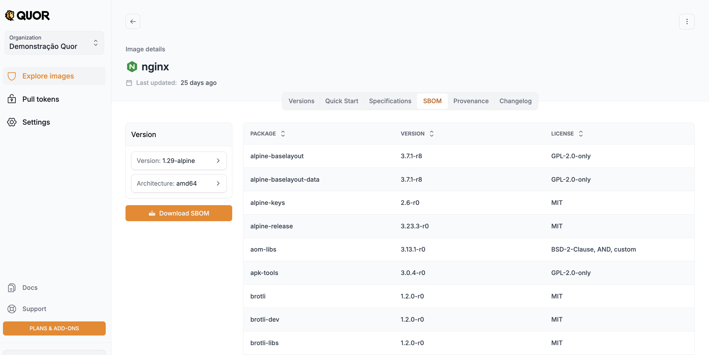
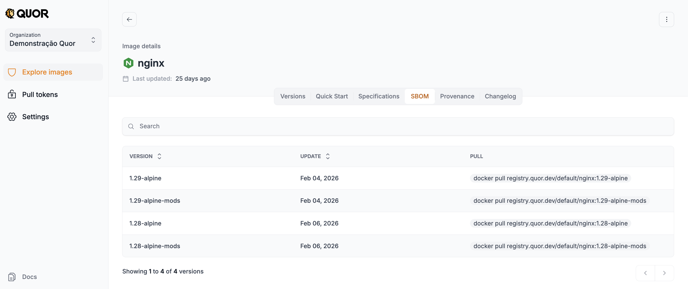

SBOM¶
Introdução¶
SBOM (Software Bill of Materials) é um inventário estruturado da composição de um artefato de software. Não é apenas uma lista de dependências. Uma SBOM útil para produção inclui metadados como:
- Nome e versão de cada componente
- Fornecedor/origem
- Licença
- Hashes criptográficos
- Relações de dependência
- Identificadores padronizados (como PURL e CPE)
Na prática, o conteúdo pode ser modelado como um grafo de dependências, permitindo análise transitiva de impacto e correlação contínua com vulnerabilidades.
Os formatos mais usados no mercado são SPDX e CycloneDX.
Por que SBOM é estrutural para segurança¶
Em incidentes como Log4Shell, a pergunta mais importante não é "temos scanner?", e sim:
- Onde esse componente está presente?
- Quais versões de imagem são impactadas?
- O que já foi corrigido?
Sem SBOM, essa resposta costuma exigir busca manual e reconstrução de contexto. Com SBOM, o inventário já está materializado e pode ser reavaliado continuamente contra bases como NVD, OSV e GHSA, sem necessidade de recompilar a imagem.
Isso reduz ruído e acelera resposta.
SBOM no Quor¶
No Quor, a SBOM é gerada durante o build e publicada para cada versão da imagem como parte do conjunto de evidências de segurança. Ela é distribuída junto com assinaturas e metadados de proveniência.
Para acessar e baixar:
- Abra o catálogo de imagens.
- Clique na imagem desejada.
- Na página de detalhes, acesse a aba SBOM.
- Selecione a versão e a arquitetura.
- Faça o download do SBOM completo.


Relação com VEX, proveniência e SLSA¶
A SBOM responde o que compõe a imagem. Ela não responde sozinha:
- Se uma CVE é explorável naquele contexto
- Como a imagem foi construída e por qual identidade
- Qual nível de garantia de supply chain o processo oferece
Por isso, a SBOM deve ser consumida junto com:
- VEX: status de explorabilidade por CVE com justificativa técnica (
not_affected,affected,fixed,under_investigation) - Atestados de proveniência: evidência verificável de origem do build (repositório, commit, builder, timestamp)
- Controles alinhados a SLSA: maturidade do pipeline de build e publicação
Esse encadeamento transforma inventário em evidência auditável de confiança.
Nota prática: scan de SBOM vs scan da imagem OCI¶
Em muitos pipelines, escanear a SBOM já gerada é mais eficiente do que reescanear toda a imagem OCI em cada execução. Como o inventário de pacotes já está enumerado, o scanner pode focar diretamente na correlação de vulnerabilidades. Isso melhora escala e desacopla build de análise de risco.
Escopo e limitações¶
SBOM é essencial, mas não cobre tudo:
- Foca principalmente na composição de terceiros
- Não substitui SAST/DAST, threat modeling nem revisão de código
- Não prova autenticidade sem assinatura/atestado vinculados ao artefato
No Quor, SBOM é um bloco central dentro de uma arquitetura maior orientada a evidências.